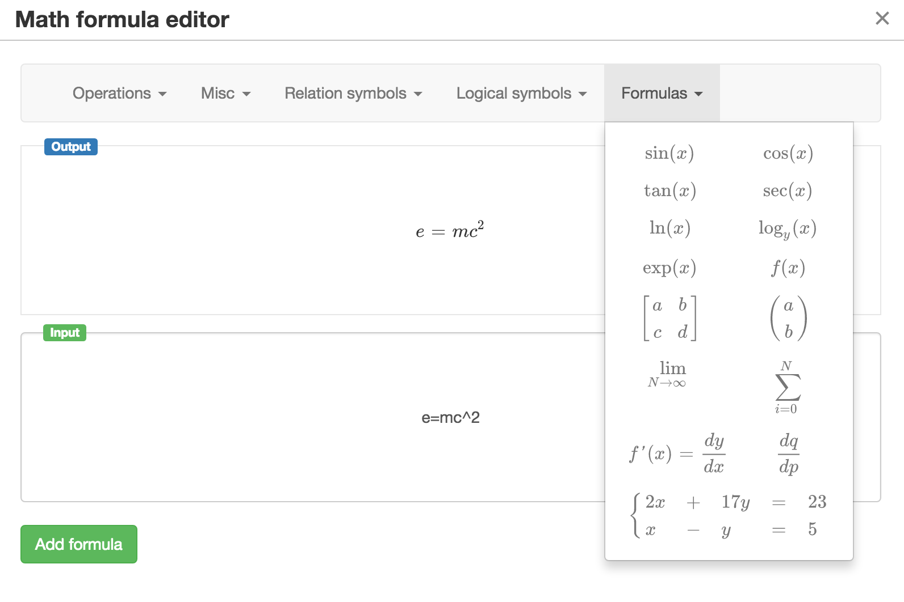

The re-engineered version of RAJE
Last year we have released a pre-alpha version of the RASH Javascript Editor (RAJE) . We tested it involving 6 people in a user testing session, where we asked them to reproduce a particular document by using the editor. While the evaluation of the perceived usability of RAJE was acceptable, the test also highlighted some critical issues of the system. In particular, the users stressed on three weaknesses: (i) lack of some shortcuts and keys to make the navigation smooth, (ii) difficulties in inserting and modifying some content elements and (iii) issues on portability and installation. Thus, we have entirely re-engineered RAJE so as to address these problems.
The new architecture of RAJE is shown in . In particular, it is now defined by means of two specific modules. The first module, i.e. RAJE-core, implements the main editing functionalities, and it is based on TinyMCE – contrarily, the previous version of RAJE was totally developed from scratch. The other module, i.e. RAJE-app, is a wrapper that uses RAJE core to implement the standalone wordprocessor. RAJE-app allows one to store RASH documents either in the file system or in online storages such as Github (as of 7 January 2018, still an experimental feature) and Dropbox (not implemented yet). The main idea of this new infrastructure is to keep the core separated from the wrapper separated so as to enable the reuse of the editing capabilities of RAJE in different environments (within a Web application, imported in existing frameworks, etc.) – while, in the previous version, RAJE was a monolithic artefact.

RAJE core
RAJE-core manages everything that concerns the editing of the RASH documents. As introduced in , RASH is a rather simple HTML-based markup language, which focuses on representing the content of an article avoiding to repeat the same information and without caring of the specification of presentational objects, such as the label to associate to in-text reference pointers or to any other complex objects (e.g. sections, figures, tables). The rendering of these labels – "Figure 2", "[3]", the number associated to sections, the metadata associated to the paper, etc. – is done automatically by the view package available in RASH and implemented in CSS3+Javascript, which enables to show the whole content of the paper.
This distinction between the original RASH file (RASH source from now on) and the way it is visualised in the browser after the application of CSS3 stylesheets and Javascript scripts (Rash view from now on) is a peculiar choice of the design of RASH. It was made to improve modularity and flexibility, and to speed up the editing process.
It is also fundamental to understand how RAJE-core works. In fact, RAJE-core addresses two main tasks: the editing the RASH view (through its WYSIWYG interface) and the conversion of the RASH view into the RASH source (called de-RASHing process). These two operations are necessary so as to enable the modification of the document and to prepare the current visualised content to be properly stored according to RASH (source). It is worth mentioning that the storing operation is not implemented by the core since this is designed to only deal with the editing process itself.
The new version of the RAJE core was entirely rewritten and extended on top of TinyMCE. The adoption of TinyMCE has simplified several typical operations such as the undo/redo. This has been implemented by using the TinyMCE undo manager as the basic layer: the RAJE core handles complex undo-redo operation by combining data from the lower layer. There have been several other pros in the adoption of TinyMCE, besides the aforementioned undo/redo handling, among which a better stability in the creation and deletion of inline elements (em, strong, etc.).
On the other hand, the use of TinyMCE has required us to solve several other issues for handling formulas and footnotes. In RASH, the best and most-Webby choice for defining mathematical formulas is to use MathML, that is rendered by means of MathJax. However, the problem with this approach is that TinyMCE blocks any injected script, including those that are needed by Mathjax for rendering such formulas. Thus, in order to allow RAJE-core to edit formulas, we have developed a modal dialog that has been defined outside TinyMCE. This modal dialog, shown in , allows one to write the formulas in AsciiMath (input panel) and to visualise them in real-time as SVG content (output panel) by means of MathJax.

When a formula is added (by pressing the button add formula), the related SVG content is added in the TinyMCE content with an additional attribute, i.e. data-mathml, which includes the MathML representation of the formula so as to be used when storing the document. This allows us to easily transform the formula from the SVG format into MathML during the de-RASHing process, obtaining a RASH source with only MathML formulas. Similarly, during the start-up of RAJE-core, all the formulas (which are stored in MathML in the RASH source) are temporarily moved in a wrapper element outside TinyMCE, processed in SVG, and then put again in the editor body as SVG content.
Another important difference with the previous version of RAJE is the way the article metadata (title, authors, keywords, etc.) are handled in the new version. In particular, we have developed a modal dialog which is opened once one click on any metadata. In addition, the order of the authors can be changed by dragging and dropping them in the favourite position. All these choices made the interaction with RAJE much easier and comfortable for the final users.
RAJE-app
The RAJE-app is the wordprocessor that enables one to load, save and modify HTML documents compliant with RASH. Technically speaking, it is a wrapper (as defined in ) that reuses RAJE-core and adopts Electron for developing a standalone application – available for Apple OS X, Microsoft Windows, and Linux. The main responsibility of the RAJE-app is to wrap the core and manage communications between it and other external actors. For instance, it implements the storing of RASH documents by following the process introduced in .

The system uses a similar approach to implement other functionalities as well. For instance, RAJE-app integrates NodeGit, i.e. a Node.js module that imports a light git standalone, so as to implement the storing of an article within a GitHub repository. While it would be possible to use directly the GitHub API for addressing this operation (which was the approach used in the old version of RAJE), having a real local git repository works better since a single commit can wrap more files – something that cannot be done by using the GitHub API – and it can also be performed offline. Thus, the use of NodeGit enables RAJE to have an easier versions management, and it also opens up to the development of further complex actions (to be implemented). Examples are merging shared articles and restoring a particular version of an article; note also that the whole set of Git functionalities is supported by NodeGit. It is worth mentioning that, while RAJE-app is already integrated with Git, the integration with GitHub is still under development.
Testing the wordprocessor
The new version of the wordprocessor, i.e. RAJE-app, is depicted in . It is a quite simple and intuitive interface, composed by a toolbar, which allows one to add all the elements introduced in RASH, and the content of the article one is writing. This demo paper has been written by using RAJE-app, and it is available at https://w3id.org/people/essepuntato/papers/raje-www2018.html.

In the past months, we have also tested extensively the new version of the editor by using it to create the entire set of lecture notes of the Computational Thinking and Programming course of the Digital Humanities and Digital Knowledge second-cycle degree at the University of Bologna, Italy. In practice, after the first stable version of the new RAJE-app was released in early November, one of the authors of this paper started to use it on daily basis for writing the lecture notes of the course. The official GitHub repository of RAJE-app was used to collect issues. This has brought to the creation of 12 releases so far (as of 7 January 2018), which every time improved the stability of the editor and the functionalities it provides.